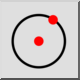
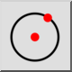
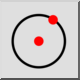
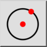

Centrum, punkt
Pasek narzędzi / ikona:
 

Menu: Rysuj > Koło > Centrum, punkt
Skrót: C, I
Polecenia: circle | ci
Jest to tłumaczenie automatyczne.
Pasek narzędzi / ikona:
 

Menu: Rysuj > Koło > Centrum, punkt
Skrót: C, I
Polecenia: circle | ci
Rysuje okrąg z danym środkiem i punktem na linii okręgu.